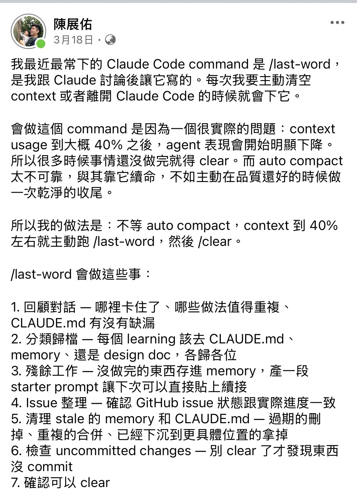
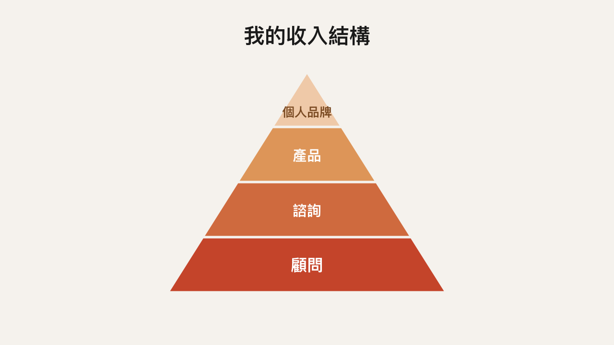
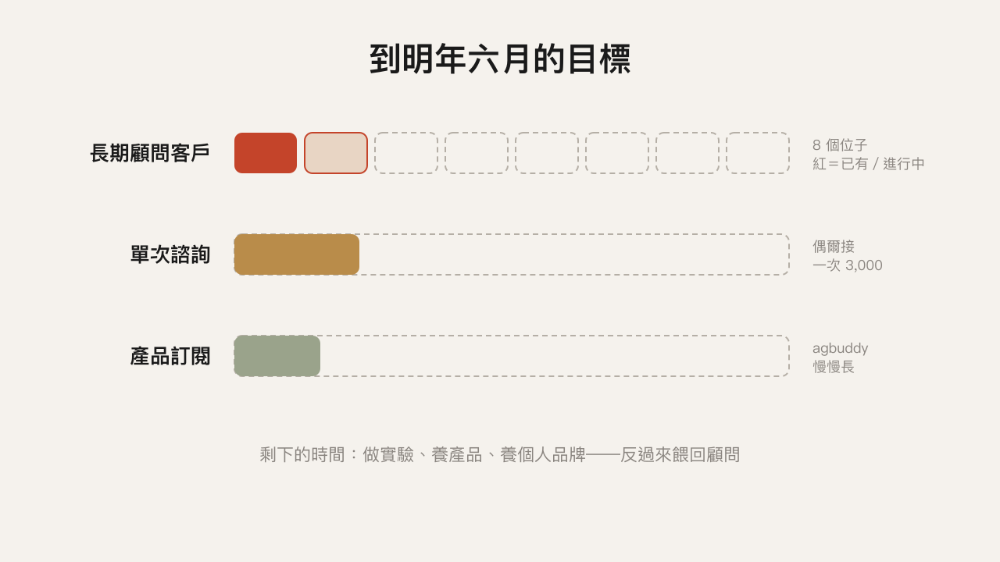
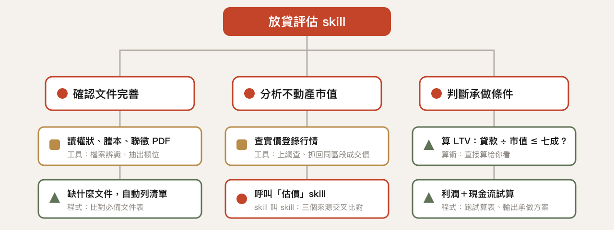
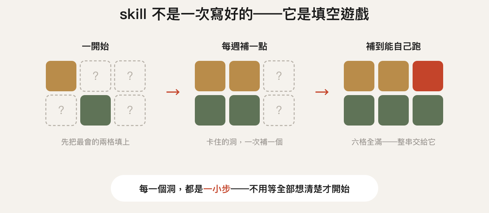
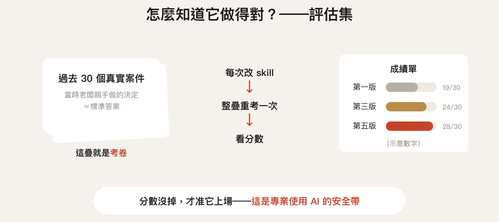

Yo 的顧問生涯小成發
老闆們如何用 AI 降本增效？——AI agent 商務應用 case studies
我從哪裡來？我的專業是什麼
故事時間顧問換保單 → 補習班 → 自己的產品 → 朋友的顧問公司 → 終於決定轉型
實戰演練——讓 AI 處理放貸評估
什麼樣的事情適合交給 AI？
我現在怎麼接案
軟體新創十幾年，教了我什麼
行銷
經營策略
使用者研究
軟體開發★
老闆拍腦袋想做 A 功能時，
我們做三件事：
用更少的錢跟時間，驗證它是不是真的值得做
評估實作的成本
看看同時間，有沒有更划算的事
確定「該做」，才談「怎麼做」。
效率：多快做出來 ｜ 穩定：做出來多可靠
故事時間
我保險成交的第一單，
是靠 AI 顧問換來的。
場館營運、教練排班
回覆客戶詢問時，資料查詢困難
我的模式：
給思路、給方向、示範關鍵流程。
目標是他離開我之後，自己也能動手。
排班問題——有了自己做的整理工具
客戶詢問——資料查詢流程做起來了
然後我成交了——
一張金額很小的定期健康險。
圓補習班老闆的夢
把學習變成 RPG 遊戲？
門口放任務布告欄？
個性化的學生讀書小幫手？
為了解決什麼問題？
有什麼假設？
有沒有更便宜、更快的方式？
有沒有最小可行的實驗版本？
現在最重要的是這個嗎？
如果重要，是什麼我們還沒開始？
幾次諮詢之後，
我們知道什麼最值得先做：
先做點名系統——行政老師一週省下 5–6 小時，
老闆的計畫才有人手跟時間往下走。
他付錢買的，是這套提問
為了解決什麼問題？
有什麼假設？
有沒有更便宜、更快的方式？
有沒有最小可行的實驗版本？
現在最重要的是這個嗎？
如果重要，是什麼我們還沒開始？
那，他跟我成交保險了嗎？
沒有。
自動化保單健檢。
一個月收 200，一千個人用 ＝ 月入二十萬。
今年一月，我一頭栽進去。
三個月後的現實：
表現不夠好、問題解不完、很難賣。
但我從頭到尾邊開發邊公開寫心得——後面的案子都是這樣來的。
一直公開分享的結果——
好前輩請我去他們公司的週年活動演講。


那場演講的目標：
讓獵頭顧問們知道——AI 時代的工作，已經很不一樣了。
後來 朋友 B 請我當顧問，兩週一次，
做兩件事：
協助公司內部的專案（有保密協定，不能說太多）
公司走向 AI native 的過程裡，提供軟體與 AI 應用的知識跟意見
朋友 B 跟我說：
「你就繼續做你現在在做的事：研究 AI、動手落地，
在 session 裡給我足夠的挑戰、新觀點、落地知識。」
他買的，還是這套提問
為了解決什麼問題？
有什麼假設？
有沒有更便宜、更快的方式？
有沒有最小可行的實驗版本？
現在最重要的是這個嗎？
如果重要，是什麼我們還沒開始？
軟體＋保險，兩邊顧不好。
體力不允許、腦力不夠用，家庭不能放。
一天只有很少工作時間的人，
該做什麼，才有最大的槓桿？
為什麼不繼續衝保險？
為什麼不繼續做 SaaS？
因為我慢慢發現，我要的不是做一家新創——我要的是一種方式：


顧問養自己 → 多出來的時間養產品、養品牌 → 反過來養顧問。
以放貸案件評估為例。
做融資的高中同學：怎麼加速放款評估流程。
一個「放貸評估」skill，會自己做完這些事

一個指令，整串一口氣跑完。


AI 不是用信任上線的，是用考試上線的。
大部分人的 AI 用法，
停在對話框。
讓它安全地動手——產生檔案、編輯檔案、操作瀏覽器——是另一門功夫。
讓數位轉型的成本變得可負擔——補習班的例子
模糊的輸入輸出，可以規模化——放貸案件評估的例子
AI 顧問——幫你找到 AI 加速工作流程、產生新價值的地方
AI 家教——真的想動手？我把方法論教給你
Agent 環境——我做的 agbuddy，給你一個可以直接用的 AI 員工環境
初步諮詢 3,000／小時 ｜ 長期合作，細節另談。